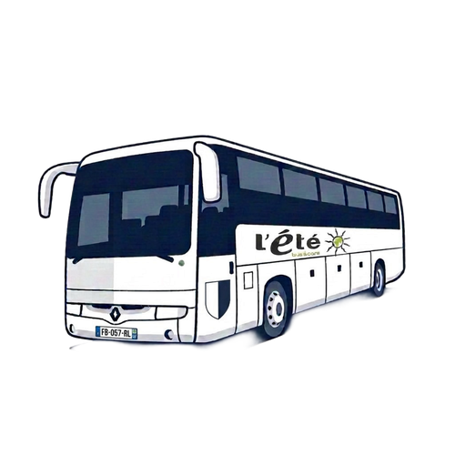
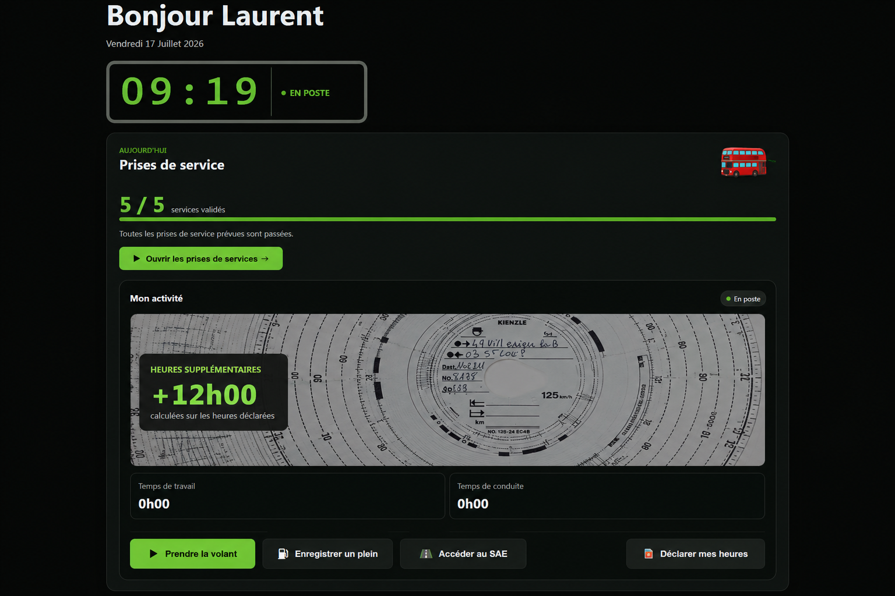

AUJOURD’HUI
Prises de service
— / —
services validés
Ouvrir les prises de service →
TABLEAU DE BORD D’EXPLOITATION
Chargement de la date…
Valider les prises de service et suivre les courses en circulation comme sur un tableau de gare.
Visualiser les affectations de Lestonan, Gourvily et des emplacements extérieurs.
Ouvrir le stationnement →
BRETAGNE · FINISTÈRERechercher les arrêts, créer des itinéraires, ouvrir le GPS et lancer le SAE personnel.
Entrer dans BreizhStops →
Consulter tes heures réelles et déclarées, tes conduites, tes kilométrages, tes pleins et tes compteurs.